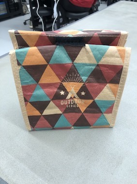

商品概要
袋に入れたまま、カバンに入れると粉々になってしまうスナック菓子を
守ってくれるケースです。
作業進捗
4/11 ペーパーモックアップを作った
Q&A

4/15 中敷の試作
コールドモックアップを作るために、ペーパーモックアップで考えられてなかった
ケース内に入れる予定の中敷きを試作した。
4/16 コールドモックアップを作った

試作したときは素材が紙だったので気づかなかったのだが、硬いプラスチックで試作時のままのサイズで中敷をつくり、袋に入れてみると口部分が閉じられないことに気づいた。
4センチほど板をカットし直し、閉じるためにサイドに少しおりグセをつけたことで、袋を閉じられるようにした。
<制作過程>
①中敷きとして、袋の中に入れる穴あきボードの中敷きを紙で試作
img
②型紙を参考に、アクリルボードを切る
img
③切ったアクリルボードを袋の中に入れる
img
④完成
img
<この試作の成功・失敗>
成功→少しの衝撃・圧迫からポテトチップスを守るための機能を持ったケースを試作できたこと
失敗→中敷きを組み立て式にしたので、少し組み立てるのが面倒になってしまったこと
<考察>
今回の施策の目的は、ポテトチップスなどの形が崩れやすいお菓子を安心して持ち運べるような、
ケースの機能を試作することでした。結果は、機能を試作できたという点で成功したと思います。
4/17 レビュー
<レビューを受けて>
自分がどこに焦点を当てたものを作りたいのか、面白いと感じたポイントはどこなのかについて
改めて色々考え直しました。考えた結果、私はポテトチップスをただ守るケースを作りたいのではなく
試作品①
(作品イメージ)材料:クラフトランチバッグ 穴あきアクリルボード
試作品② <作品イメージ> 材料: <制作過程> <この試作の成功・失敗> 成功→ 失敗→ <考察>